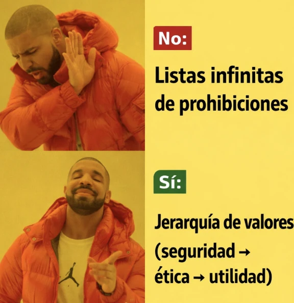

estrategIA #123 ·
Prohibiciones o prioridades
El contexto
La plantilla de Drake contrasta una lista interminable de prohibiciones con una jerarquía de valores. El número abordaba cómo orientar el comportamiento de los modelos y qué lugar conceder a la seguridad, la ética y la utilidad.
Publicado en: estrategIA #123 — Constitución y adolescencia: la IA entra en su fase crítica - La visión de Dario Amodei y Anthropic
Leer el texto de la imagen
No: Listas infinitas de prohibiciones Sí: Jerarquía de valores (seguridad → ética → utilidad)